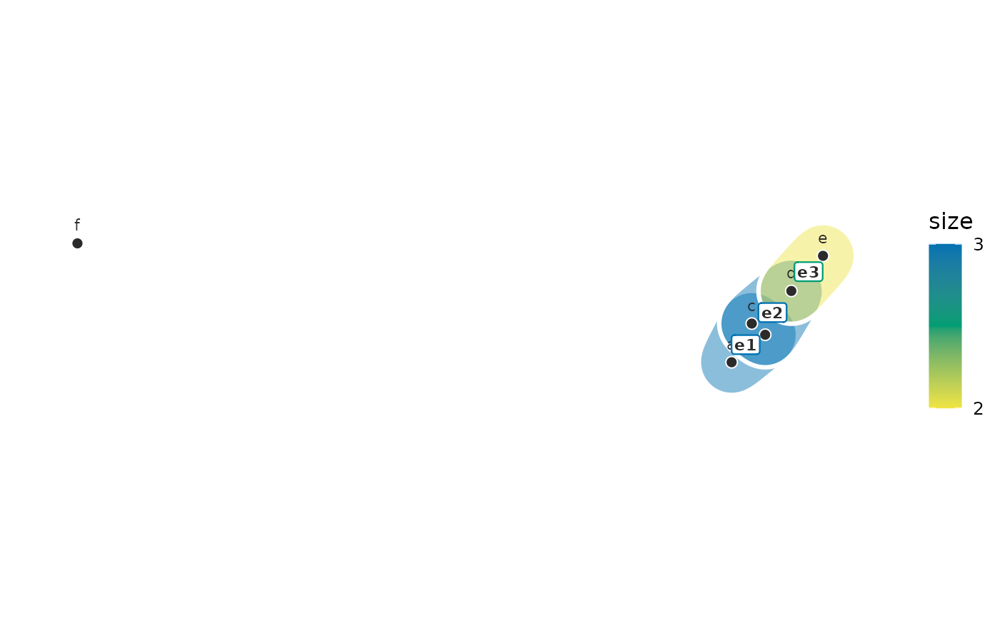
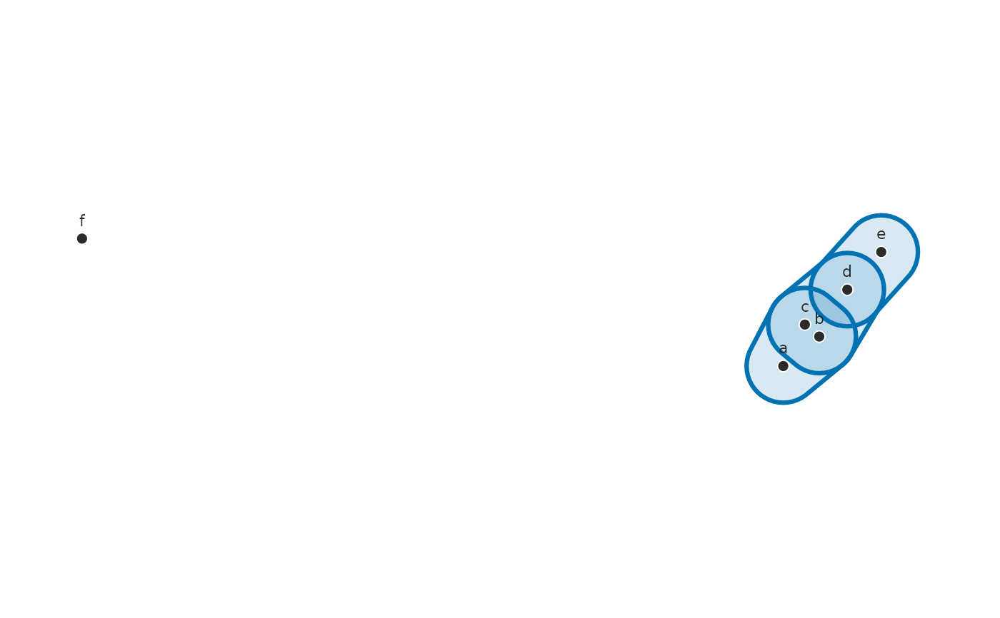
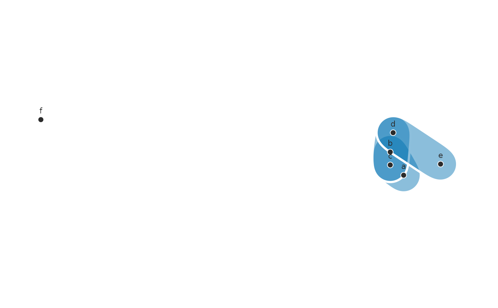
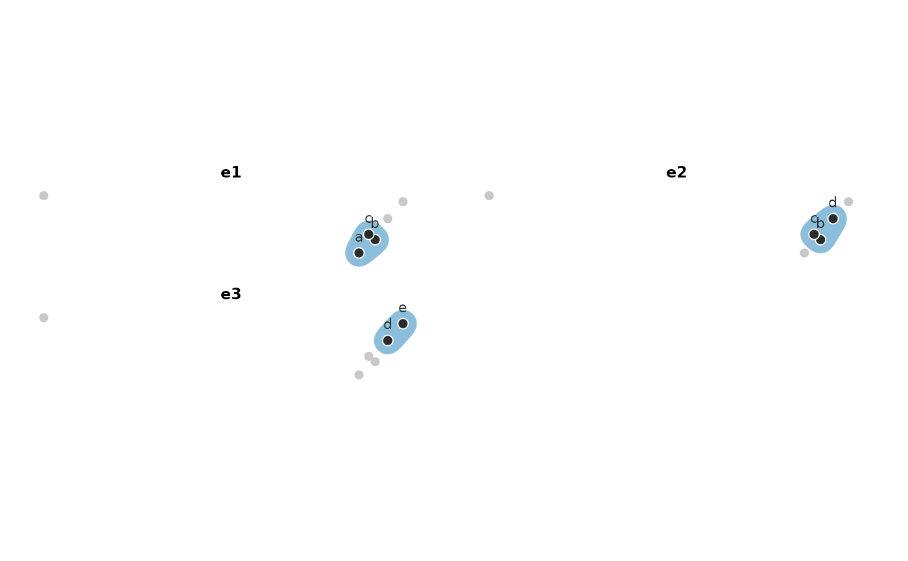

Draws every hyperedge as a smooth pebble around its members – the convex
hull of the members, widened by padding and with its corners smoothed
away – in a translucent fill parted from its neighbours by a white seam.
Every member is guaranteed to lie inside its pebble. The default layout places the bipartite star expansion
(nodes and hyperedges together), which gives each hyperedge a position of
its own among its members; hulls fan out instead of piling onto shared
nodes, and hyperedge labels sit at those positions. Hulls can be coloured
by hyperedge size, by a column of the edge metadata, or by any value
supplied per hyperedge, and outlined with a line type by the same kinds of
selector. A hyperedge with a single member is drawn as its node alone.
Usage
# S3 method for class 'net_hypergraph'
plot(
x,
layout = c("bipartite", "spring", "circle"),
center = NULL,
seed = 1L,
color_by = NULL,
linetype_by = NULL,
labels = TRUE,
label_size = 3,
edge_labels = FALSE,
edge_label_size = 3,
dismantled = FALSE,
ncol = NULL,
node_size = 2.5,
detail = 5,
outline = "white",
alpha = 0.45,
linewidth = 1.1,
padding = 0.045,
legend_title = NULL,
...
)Arguments
- x
A
net_hypergraphwith at least one hyperedge of two or more members. Draw a part of a large hypergraph by passinghg_subset()first.- layout
"bipartite"(default; a Fruchterman-Reingold layout of the star expansion, nodes and hyperedges placed together),"spring"(the same on the clique projection),"circle", or a data.frame withnode,xandycolumns to reuse node coordinates across panels (hyperedges then sit at the centroid of their members).- center
Node names to place in the middle of the picture, such as the outcome states every hyperedge ends in. Under
"bipartite"and"spring"they are held on a small ring at the centre while the rest of the layout arranges around them; under"circle"they sit inside the ring of the other nodes. Names that are not nodes of this hypergraph are skipped, so one vector can serve several subsets; an error is raised only when none of them is.NULL(default) places every node freely. Not used with alayouttable.- seed
Seed for the force-directed layouts (default
1); the caller's random number stream is left untouched.- color_by
Colour of the hulls:
NULL(one colour),"size"(hyperedge cardinality, sequential scale), the name of a column in the edge metadata (x$edge_data), a vector named by hyperedge, or a vector with one value per hyperedge. Character or factor values get the Okabe-Ito palette; numeric values a sequential scale built from it.- linetype_by
Outline line type of the hulls, resolved like
color_by; discrete only.- labels
TRUE(default) writes the node names,FALSEwrites none, and a character vector named by node replaces the names shown.- label_size, node_size
Text and point sizes.
- edge_labels
Name the hyperedges on the figure.
FALSE(default) writes nothing,TRUEwrites the hyperedge names, or pass a vector named by hyperedge to write something else. Under the bipartite layout each label sits at the hyperedge's own position; under the projection layouts, just outside the member furthest from the centre, clear of the crowded overlap.- edge_label_size
Text size for
edge_labels(default3).- dismantled
Draw one panel per hyperedge instead of one figure with every hull overlaid (default
FALSE). All panels share the layout, so positions are comparable; each panel greys out the non-members and is titled with its hyperedge name.edge_labelsdoes not apply.- ncol
Columns in the panel grid when
dismantled = TRUE(default: roughly square).- detail
How much of the hull's shape the smoothing keeps: the width, in harmonics, of the Gaussian low-pass applied to the outline. The default
5gives rounded, tapering petals;3is rounder still,8stays close to the members, andInfdraws the unsmoothed rounded hull.- outline
Outline colour:
"white"(default) draws seams that part overlapping hyperedges;"fill"outlines each hyperedge in its own colour (pair it with a loweralpha, e.g.0.15); any other colour is used as given.- alpha
Fill transparency (default
0.45); the outline is always drawn at full strength.- linewidth
Width of the outlines (default
1.1).- padding
Room around the member positions as a fraction of the layout extent (default
0.045).- legend_title
Legend title for
color_by; defaults to the selector's name.- ...
Unused; for S3 consistency.
References
Coupette, C., Hartung, D., & Katz, D. M. (2024). Legal hypergraphs. Philosophical Transactions of the Royal Society A, 382(2270), 20230141. doi:10.1098/rsta.2023.0141
Fruchterman, T. M. J., & Reingold, E. M. (1991). Graph drawing by force-directed placement. Software: Practice and Experience, 21(11), 1129-1164. doi:10.1002/spe.4380211102
Examples
dat <- data.frame(
member = c("a", "b", "c", "b", "c", "d", "d", "e", "f"),
event = c("e1", "e1", "e1", "e2", "e2", "e2", "e3", "e3", "e4")
)
hg <- group_hypergraph(dat, "member", "event")
plot(hg, color_by = "size", edge_labels = TRUE)

plot(hg, detail = Inf, outline = "fill", alpha = 0.15)

plot(hg, center = c("b", "c"))

plot(hg, dismantled = TRUE)
